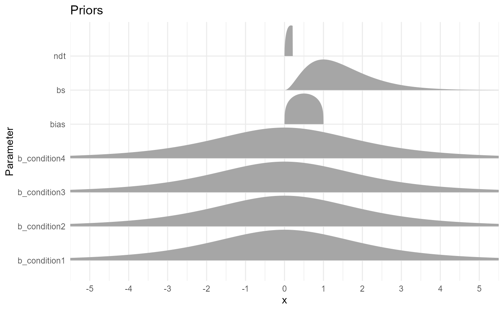

Drift Diffusion Model (DDM) in R: A Tutorial
ddm.RmdSetup
If you haven’t, install the easyRT package by running:
remotes::install_github("DominiqueMakowski/easyRT")Load the necessary packages.
Acknowledgments
DDMs appear to be quite complicated to implement. I tried to use HDDM and PyDDM in Python, and had a look at R alternatives, but I didn’t find any solution that was easy to use and flexible enough (for my use-case) out-of-the-box. It seems like the powerful brms is currently the best way to approach that, though it has a steep learning curve… Thus, a massive thanks to @singmann, that made this blogpost, the rtdists and fddm packages.
Theory

A graphical illustration of the Wiener diffusion model for two-choice reaction times. An evidence counter starts at value \(\alpha*\beta\) and evolves with random increments. The mean increment is \(\delta\) . The process terminates as soon as the accrued evidence exceeds \(\alpha\) or deceeds 0. The decision process starts at time \(\tau\) from the stimulus presentation and terminates at the reaction time. This figure is from Wabersich and Vandekerckhove (2014).
Drift Diffusion Models, aka Diffusion Decision Model, aka DDMs are a class of sequential models that model RT as a drifting process towards a response. They are useful to jointly model reaction time and a binary outcome, such as 2 different choices or accuracy (i.e., “correct” vs “error”). They are based on Wiener distributions that are defined by 4 parameters:
- drift: The drift rate (delta \(\delta\)) is the average slope of the accumulation process towards the boundaries. The larger the (absolute value of the) drift rate, the more effective the evidence accumulation for the corresponding response option. A drift rate close to 0 suggests an ambiguous stimulus. Typical range: [-5, 5].
- bs: The boundary separation threshold (alpha \(\alpha\)) is the distance between the two decision bounds and interpreted as a measure of response caution (i.e., of speed-accuracy trade-off, with high bs being related to high accuracy). It represents the amount of evidence that is needed to make a response. Typical range: [0.5, 2].
- bias: Initial bias (beta \(\beta\)) for any of the responses. The starting point of the accumulation process. Typical range: [0.3, 0.7].
- ndt: The non-decision time (tau \(\tau\)) captures all non-decisional process, such as stimulus encoding, motor processes, etc. Typical range: [0.1, 0.5] s.
Additional variability parameters can include:
-
ndt_var: Also called
st0. Typical range: [0, 0.2] s.
Simple Example
In this example, we are going to simulate data for 4 conditions with known parameters, and we will investigate how we can then model and recover these parameters.
Data
sim <- ddm_data(n = c(200, 200, 200, 200),
drift = c(-1, 0, 1, 2),
bs = 1,
bias = c(0.4, 0.5, 0.6, 0.7),
ndt = 0.2)
ddm_plot(sim)
- Condition 1: \(drift~\delta = -1,~bias~\beta = 0.4\)
- Condition 2: \(drift~\delta = 0,~bias~\beta = 0.5\)
- Condition 3: \(drift~\delta = 1,~bias~\beta = 0.6\)
- Condition 4: \(drift~\delta = 2,~bias~\beta = 0.7\)
Boundary separation bs and ndt have been fixed to 1 and 0.15 for all conditions. Let’s visualize the raw data and the theoretical distribution it comes from.
df <- sim$data
head(df)## rt response condition
## 1 0.3283990 lower 1
## 2 0.2857288 lower 1
## 3 0.4052673 lower 1
## 4 0.3514263 lower 1
## 5 0.4020190 lower 1
## 6 0.3850511 lower 1FDDM
Unfortunately, fdmm doesn’t seem to work and throws the
following error:
Error in nlminb(start = init, objective = objective, gradient = gradient, :
NA/NaN gradient evaluationFormula
Let’s start with modelling only the drift rate.
formula <- bf(rt | dec(response) ~ 0 + condition)
family <- wiener(link_bs = "identity",
link_ndt = "identity",
link_bias = "identity")@singmaann gives
this rationale for setting an identity link:
Because the drift rate can take on any value (i.e., from -Inf to Inf), the default link function is “identity” (i.e., no transformation) which we retain. The other three parameters all have a restricted range. The boundary needs to be larger than 0, the non-decision time needs to be larger than 0 and smaller than the smallest RT, and the starting point needs to be between 0 and 1. The default link-functions respect these constraints and use “log” for the first two parameters and “logit” for the bias. This certainly is a possibility, but has a number of drawbacks leading me to use the “identity” link function for all parameters. First, when parameters are transformed, the priors need to be specified on the untransformed scale. Second, the individual-levels deviations (i.e., the random-effects estimates) are assumed to come from a multivariate normal distribution. Parameters transformations would entail that these individual-deviations are only normally distributed on the untransformed scale. Likewise, the correlations of parameter deviations across parameters would also be on the untransformed scale. Both make the interpretation of the random-effects difficult.
When specifying the parameters without transformation (i.e., link = “identity”) care must be taken that the priors places most mass on values inside the allowed range. Likewise, starting values need to be inside the allowed range. Using the identity link function also comes with drawbacks discussed at the end. However, as long as parameter outside the allowed range only occur rarely, such a model can converge successfully and it makes the interpretation easier.
Priors
- b: Our priors on the effect of conditions on the drift rate are centred around 0 and give enough probability mass to plausible values (the typical range for drift being [-5, 5]). A student distribution has fatter tails than a Gaussian one, dealing better with outliers (a Cauchy distribution would also be a good alternative).
- ndt: Our priors on the non-decision time is a gamma distribution, that naturally excludes 0. We set it slightly skewed to the left, so that most of the mass covers the 0 - 0.5 s (we don’t expect non-decision processes to take more than 0.5 s). Note that there is an upper bound set at the minimum RT value.
- bs: Our priors on the boundary separation is a wider gamma distribution (excluding 0), with a likelihood peaking around 1.
- bias: Our priors is a beta distribution (naturally bounded at \(]0, 1[\)) centered around 0.5.
# get_prior(formula, data = df, family = family)
prior <- c(
prior("student_t(3, 0, 2)", class = "b"),
set_prior("gamma(1.5, 3)", class = "ndt", ub = "min_Y"),
set_prior("gamma(3, 2)", class = "bs"),
set_prior("beta(1.3, 1.3)", class = "bias")
) |> brms::validate_prior(formula,
family = family,
data = df)
prior_data <- brms:::prepare_print_prior(prior) |>
mutate(ub = ifelse(ub == "min_Y", min(df$rt), ub),
Parameter = ifelse(coef != "", paste0(class, "_", coef), class)
) |>
filter(Parameter != "b") |>
ggdist::parse_dist()
prior_data |>
ggplot(aes(y = Parameter, xdist = .dist_obj)) +
ggdist::stat_halfeye(geom = "slab", n = 10001, normalize="xy") +
# geom_vline(xintercept = 0.3) +
scale_x_continuous(breaks = scales::pretty_breaks(n = 10)) +
coord_cartesian(xlim = c(-5, 5)) +
labs(title = "Priors") +
theme_minimal()
Sampling
init_func <- function(chain_id=1) {
list(bias = 0.5, bs = 1 , ndt = 0.2, b = rep(0, 4))
}
# str(m$fit@inits)
m <- brm(formula,
data = df,
family = family,
prior = prior,
algorithm = "sampling",
init = init_func)
# # If using `algorithm = "fullrank"`, add the following:
# iter = 10000, # N of convergence iterations, defaults to 2000.
# output_samples = 4000, # N of posterior samples to draw and save, defaults to 1000.
# elbo_samples = 100, # N of samples for Monte Carlo estimate of ELBO (objective function), defaults to 100.
# tol_rel_obj = 0.01, # convergence tolerance on the relative norm of the objective, defaults to 0.01.
# importance_resampling = TRUE # adjust the draws at the optimum to be more like draws from the posterior distribution
m## Family: wiener
## Links: mu = identity; bs = identity; ndt = identity; bias = identity
## Formula: rt | dec(response) ~ 0 + condition
## Data: df (Number of observations: 800)
## Draws: 4 chains, each with iter = 2000; warmup = 1000; thin = 1;
## total post-warmup draws = 4000
##
## Population-Level Effects:
## Estimate Est.Error l-95% CI u-95% CI Rhat Bulk_ESS Tail_ESS
## condition1 -1.47 0.15 -1.76 -1.17 1.00 4274 2862
## condition2 -0.15 0.14 -0.42 0.13 1.00 4090 3158
## condition3 1.29 0.15 0.99 1.58 1.00 4500 3172
## condition4 2.47 0.18 2.12 2.83 1.00 4634 2823
##
## Family Specific Parameters:
## Estimate Est.Error l-95% CI u-95% CI Rhat Bulk_ESS Tail_ESS
## bs 1.13 0.02 1.09 1.17 1.00 4429 3429
## ndt 0.20 0.00 0.19 0.20 1.00 4195 3120
## bias 0.52 0.01 0.50 0.55 1.00 2882 2927
##
## Draws were sampled using sampling(NUTS). For each parameter, Bulk_ESS
## and Tail_ESS are effective sample size measures, and Rhat is the potential
## scale reduction factor on split chains (at convergence, Rhat = 1).
as.data.frame(m) |>
select(starts_with("b_"), bs, ndt, bias) |>
datawizard::data_to_long(names_to="Parameter", rows_to = "iter") |>
ggplot(aes(y = Parameter)) +
ggdist::stat_halfeye(data = prior_data, aes(xdist = .dist_obj), geom = "slab", n = 10001, normalize="xy") +
# ggdist::stat_dotsinterval(aes(x = value, fill = Parameter), color = "black", slab_linewidth = NA, scale = 1, dotsize = 2, normalize = "xy") +
ggdist::stat_slabinterval(aes(x = value, fill = Parameter), slab_linewidth = NA, scale = 1, normalize = "xy") +
geom_vline(xintercept = 0, linetype = "dashed") +
coord_cartesian(xlim = c(-2.5, 5)) +
theme_minimal()
Posterior Predictive Check
brms::pp_check(m)
# performance::check_predictions(m)
df$Predicted <- as.numeric(get_predicted(m, predict = "prediction", iterations = 100))
# posterior_predict(m, newdata=df, draws = 10)
ddm_plot(mutate(df, rt = Predicted), density = sim$density) Note: I am not sure why the predictions (got with
get_predicted()) are so off…
Better Model
Formula
df$condition <- as.numeric(df$condition) - 1
formula <- bf(rt | dec(response) ~ 0 + Intercept + condition,
bias ~ 0 + Intercept + condition)
family <- wiener(link_bs = "identity",
link_ndt = "identity",
link_bias = "identity")Priors
# get_prior(formula, data = df, family = family)
prior <- c(
prior("student_t(3, 0, 1)", class = "b", coef="condition", dpar = ""),
set_prior("student_t(3, 0, 1)", class = "b", coef="Intercept", dpar = ""),
set_prior("student_t(3, 0, 0.05)", class = "b", coef="condition", dpar = "bias"),
set_prior("normal(0.5, 0.15)", class = "b", coef = "Intercept", dpar = "bias"),
set_prior("gamma(1.5, 3)", class = "ndt", ub = "min_Y"),
set_prior("gamma(3, 2)", class = "bs")
) |> brms::validate_prior(formula,
family = family,
data = df)
prior_data <- brms:::prepare_print_prior(prior) |>
filter(prior != "(flat)") |>
mutate(ub = ifelse(ub == "min_Y", min(df$rt), ub),
Parameter = paste0(
ifelse(coef != "", paste0(class, "_", coef), class),
ifelse(dpar != "", paste0("_", dpar), ""))
) |>
ggdist::parse_dist()
prior_data |>
ggplot(aes(y = Parameter, xdist = .dist_obj)) +
ggdist::stat_halfeye(geom = "slab", n = 10001, normalize="xy") +
# geom_vline(xintercept = 0.3) +
scale_x_continuous(breaks = scales::pretty_breaks(n = 10)) +
coord_cartesian(xlim = c(-5, 5)) +
labs(title = "Priors") +
theme_minimal()Sampling
# stancode(m)
init_func <- function(chain_id=1) {
list(b = rep(0, 2),
b_bias = c(0.5, 0),
bs = 1, ndt = 0.2)
}
# m$fit@inits
m <- brm(formula,
data = df,
family = family,
prior = prior,
algorithm = "sampling",
init = init_func)
# # If using `algorithm = "fullrank"`, add the following:
# iter = 10000, # N of convergence iterations, defaults to 2000.
# output_samples = 4000, # N of posterior samples to draw and save, defaults to 1000.
# elbo_samples = 100, # N of samples for Monte Carlo estimate of ELBO (objective function), defaults to 100.
# tol_rel_obj = 0.01, # convergence tolerance on the relative norm of the objective, defaults to 0.01.
# importance_resampling = TRUE # adjust the draws at the optimum to be more like draws from the posterior distribution
m## Family: wiener
## Links: mu = identity; bs = identity; ndt = identity; bias = identity
## Formula: rt | dec(response) ~ 0 + Intercept + condition
## bias ~ 0 + Intercept + condition
## Data: df (Number of observations: 800)
## Draws: 4 chains, each with iter = 2000; warmup = 1000; thin = 1;
## total post-warmup draws = 4000
##
## Population-Level Effects:
## Estimate Est.Error l-95% CI u-95% CI Rhat Bulk_ESS Tail_ESS
## Intercept -1.25 0.14 -1.53 -0.96 1.00 1784 2219
## condition 1.19 0.09 1.02 1.36 1.00 1612 2361
## bias_Intercept 0.48 0.02 0.44 0.52 1.00 1961 2428
## bias_condition 0.03 0.01 0.01 0.05 1.00 1842 2092
##
## Family Specific Parameters:
## Estimate Est.Error l-95% CI u-95% CI Rhat Bulk_ESS Tail_ESS
## bs 1.14 0.02 1.10 1.18 1.00 3076 2768
## ndt 0.20 0.00 0.19 0.20 1.00 2877 2305
##
## Draws were sampled using sampling(NUTS). For each parameter, Bulk_ESS
## and Tail_ESS are effective sample size measures, and Rhat is the potential
## scale reduction factor on split chains (at convergence, Rhat = 1).
as.data.frame(m) |>
select(b_condition_bias = b_bias_condition, b_Intercept_bias = b_bias_Intercept, b_condition, b_Intercept, bs, ndt) |>
datawizard::data_to_long(names_to="Parameter", rows_to = "iter") |>
ggplot(aes(y = Parameter)) +
ggdist::stat_halfeye(data = prior_data, aes(xdist = .dist_obj), geom = "slab", n = 10001, normalize="xy") +
# ggdist::stat_dotsinterval(aes(x = value, fill = Parameter), color = "black", slab_linewidth = NA, scale = 1, dotsize = 2, normalize = "xy") +
ggdist::stat_slabinterval(aes(x = value, fill = Parameter), slab_linewidth = NA, scale = 1, normalize = "xy") +
geom_vline(xintercept = 0, linetype = "dashed") +
coord_cartesian(xlim = c(-2.5, 5)) +
theme_minimal()Posterior Predictive Check
brms::pp_check(m)
# performance::check_predictions(m)
df$Predicted <- as.numeric(get_predicted(m, predict = "prediction", iterations = 100))
# posterior_predict(m, newdata=df, draws = 10)
ddm_plot(mutate(df, rt = Predicted, condition = as.factor(condition)), density = sim$density)